01
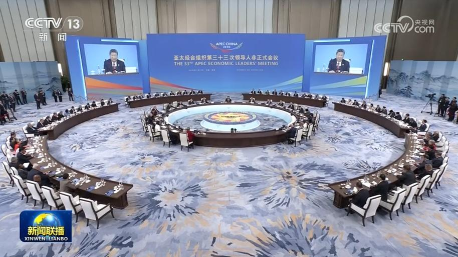
习近平主持亚太经合组织第三十三次领导人非正式会议并发表重要讲话
11月19日上午，国家主席习近平在深圳国际交流中心主持亚太经合组织第三十三次领导人非正式会议，并发表题为《建设亚太共同体，续写“亚太奇迹”新篇章》的重要讲话。
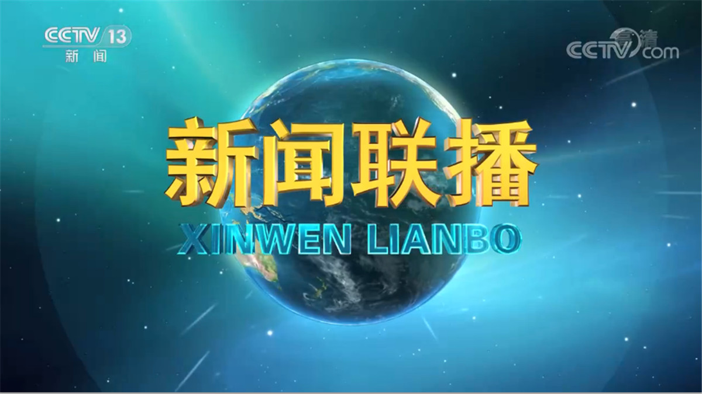

11月19日上午，国家主席习近平在深圳国际交流中心主持亚太经合组织第三十三次领导人非正式会议，并发表题为《建设亚太共同体，续写“亚太奇迹”新篇章》的重要讲话。
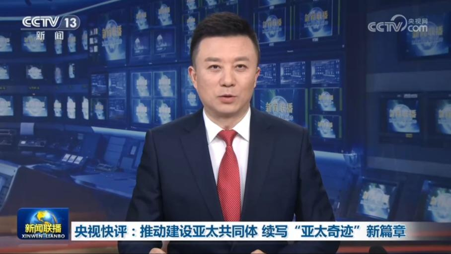
本台今天（11月19日）播发央视快评《推动建设亚太共同体 续写“亚太奇迹”新篇章》。
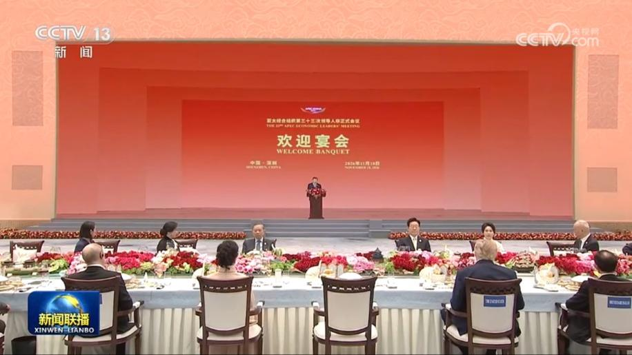
11月18日晚，国家主席习近平和夫人彭丽媛在深圳国际交流中心举行宴会，欢迎出席亚太经合组织第三十三次领导人非正式会议的来宾。
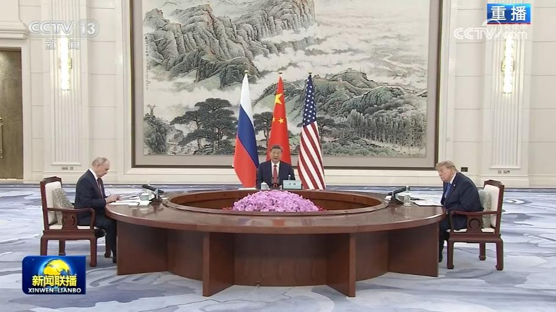
11月19日下午，国家主席习近平在深圳同俄罗斯总统普京、美国总统特朗普举行中俄美元首会晤。三国元首围绕“维护世界和平，促进大国关系战略稳定”主题进行深入讨论。
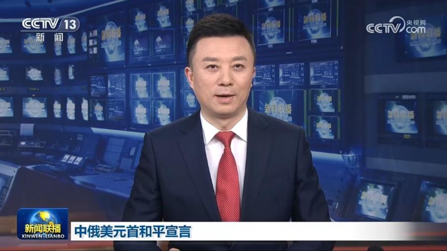
中俄美元首和平宣言
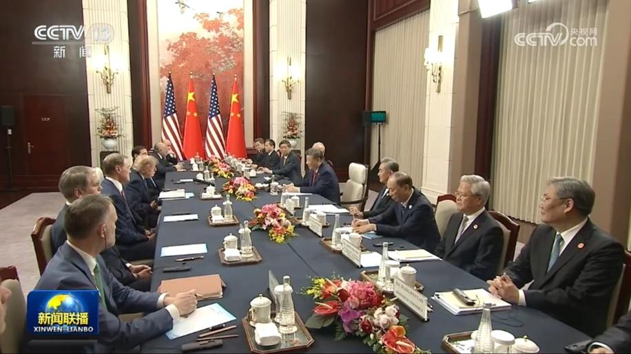
11月19日下午，国家主席习近平在深圳会见来华出席亚太经合组织领导人非正式会议的美国总统特朗普。
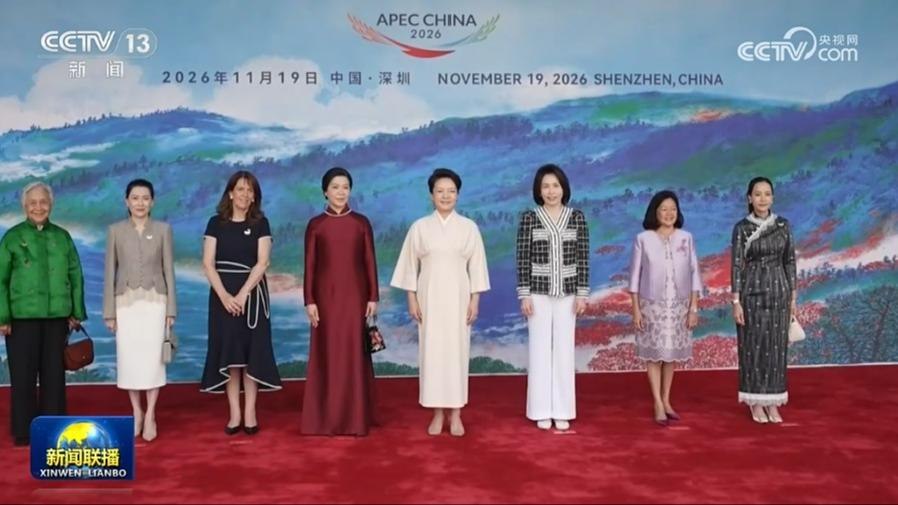
11月19日上午，国家主席习近平夫人彭丽媛同出席亚太经合组织第三十三次领导人非正式会议的经济体领导人或代表配偶在深圳湾文化广场举行集体活动。
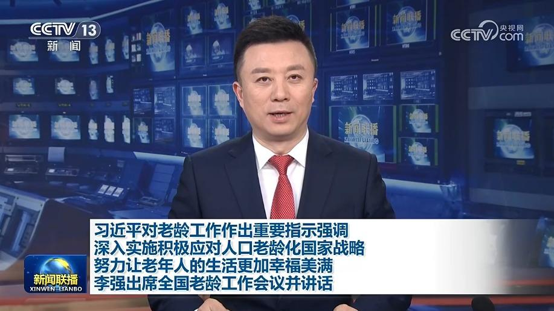
中共中央总书记、国家主席、中央军委主席习近平近日对老龄工作作出重要指示指出，党的十八大以来，我国老龄工作取得新进展新成效，养老事业和养老产业快速发展，广大老年人获得感、幸福感、安全感持续增强。
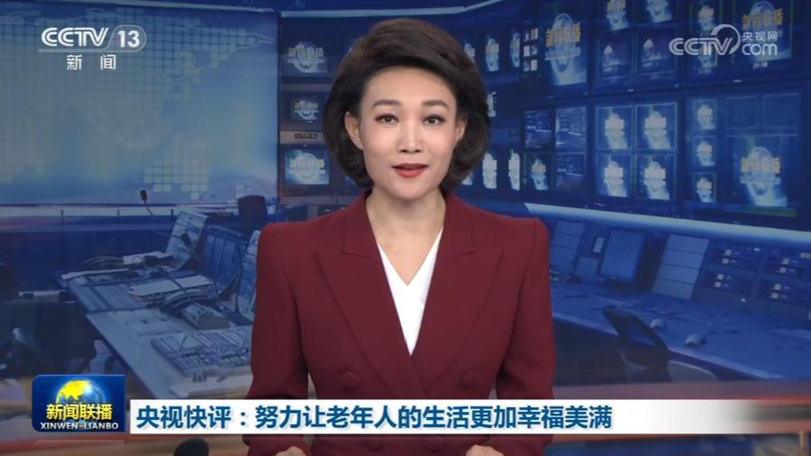
本台今天（11月19日）播发央视快评《努力让老年人的生活更加幸福美满》。
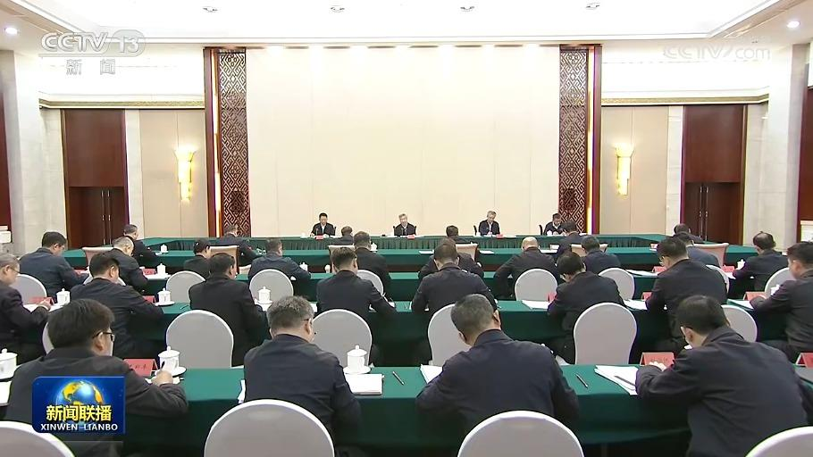
中共中央政治局常委、中央纪委书记李希16日至19日到广西调研。他强调，纪检监察机关在持之以恒推进全面从严治党中责任重大、使命光荣，要深入学习贯彻习近平新时代中国特色社会主义思想特别是习近平党建思想，认真学习贯彻党的二十届五中全会精神，深刻领悟“两个确立”的决定性意义、坚决做到“两个维护”，以更高标准、更实举措做好纪检监察各项工作。
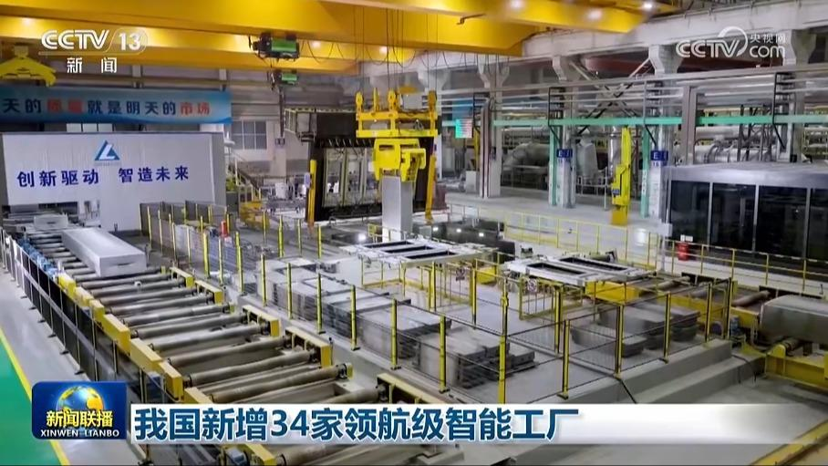
工业和信息化部等六部门今天（11月19日）公布了新一批34家领航级智能工厂培育名单。从区域分布来看，东北、西北、西南、中部、东部地区全覆盖；从行业来看，在装备制造、钢铁、电子信息等领域外，消费品领域医药、服装等企业首次入选，覆盖范围从大国重器延伸至百姓民生。
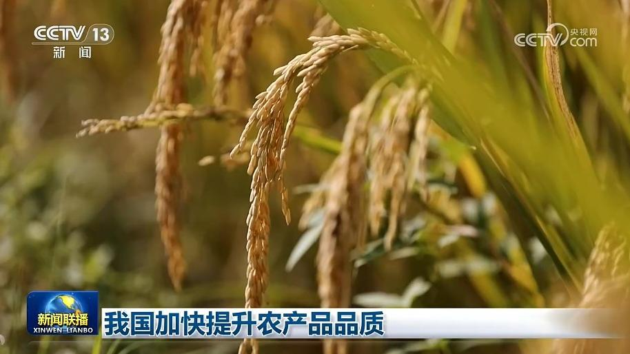
记者从农业农村部了解到，“十五五”期间我国将推动农业由产量主导向产量品质并重转变，通过实施农业标准化提升计划、绿色优质农产品供给扩容行动等，到2030年，基本建立以市场需求为导向的品质评价和质量分级制度，提升绿色优质农产品供给水平。全国农产品质量安全例行监测合格率稳定在98%以上，绿色、有机、名特优新和地理标志农产品总数达到13万个，培育发展一批绿色食品原料标准化供应地和集中产区。
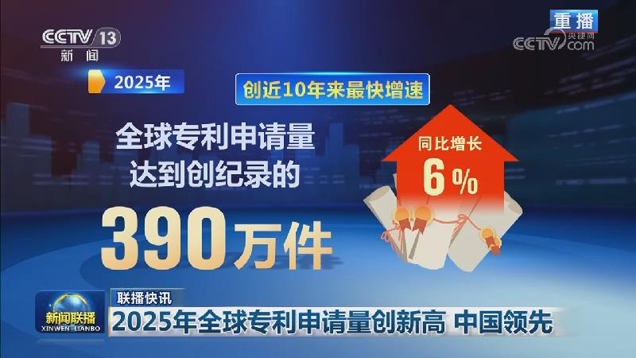
新一批可信数据空间创新发展试点启动